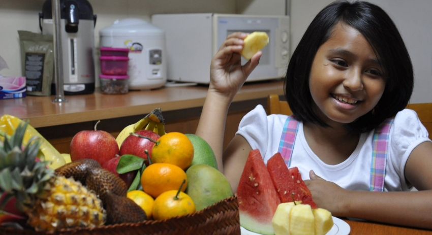

Goal 3: Ensure healthy lives and promote well-being for all at all ages

Ensuring healthy lives and promoting the well-being for all at all ages is essential to sustainable development.
Significant strides have been made in increasing life expectancy and reducing some of the common killers associated
with child and maternal mortality. Major progress has been made on increasing access to clean water and sanitation,
reducing malaria, tuberculosis, polio and the spread of HIV/AIDS. However, many more efforts are needed to fully
eradicate a wide range of diseases and address many different persistent and emerging health issues.
Goal Targets
1) By 2030, reduce the global maternal mortality ratio to less than 70 per 100,000 live births.
2) By 2030, end preventable deaths of newborns and children under 5 years of age, with all countries
aiming to reduce neonatal mortality to at least as low as 12 per 1,000 live births and under-5
mortality to at least as low as 25 per 1,000 live births.
3) By 2030, end the epidemics of AIDS, tuberculosis, malaria and neglected tropical diseases and combat
hepatitis, water-borne diseases and other communicable diseases.
4) By 2030, reduce by one third premature mortality from non-communicable diseases through prevention
and treatment and promote mental health and well-being.
5) Strengthen the prevention and treatment of substance abuse, including narcotic drug abuse and harmful
use of alcohol.
6) By 2020, halve the number of global deaths and injuries from road traffic accidents
7) By 2030, ensure universal access to sexual and reproductive health-care services, including for family
planning, information and education, and the integration of reproductive health into national strategies
and programmes.
8) Achieve universal health coverage, including financial risk protection, access to quality essential
health-care services and access to safe, effective, quality and affordable essential medicines and
vaccines for all.